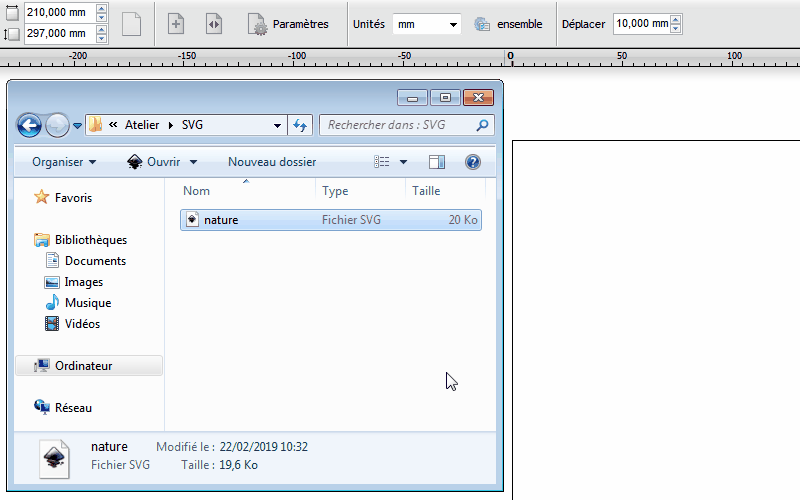
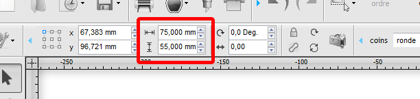
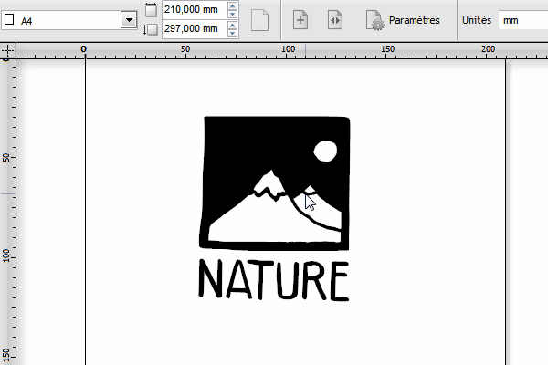

Guide d'utilisation de la découpeuse
 guide à jour
guide à jour
![img]
Tout pour savoir comment utiliser la découpeuse !
[TOC]
.svgPour apprendre à vectoriser un dessin sur Inkscape voir le tuto vectorisation.
DrawCut est le logiciel qui permet à l’ordinateur de communiquer avec la découpeuse.
Importer le fichier .svg dans DrawCut en le glissant-déposant dans l’espace de travail et re-cliquer pour valider.

Sélectionner le contenu à découper et définir sa dimension en millimètres dans la barre de menu.

Ou redimensionner directement en utilisant le curseur. Bien retenir les dimensions.

Modifier son orientation si besoin.


Une fois le fichier bien préparé il reste encore quelques étapes avant de lancer la découpe.
Il faut s’assurer que tout les réglages au niveau de la machine soit fait en fonction du type de découpe que l’on souhaite faire : calage du médium à découper, force et vitesse de découpe et le positionnement de la lame.

Choisir une couleur et prendre un morceau de vinyle de dimensions convenables en prévoyant de la marge. Se servir en priorité dans le classuer à chutes. Si il n’y a pas de chutes qui conviennent, découper un morceau dans le rouleau approprié en prévoyant de la marge.
Tirer le levier vers le haut et insérer le morceau de vinyle. Placer le de manière à ce qu’il soit :
Quand tout est bien calé, redescendre le levier pour bloquer le vinyle en place.

Pour découper dans le vinyle autocollant il est recommandé d’avoir les paramètres suivant :
Prendre la feuille de papier et la placer sur la planche de découpe en plastique. Il ne faut pas mettre une feuille à découper seule sans la planche de découpe !
Tirer le levier vers le haut et insérer la planche de découpe ainsi que la feuille de papier et placer les de manière à ce qu’il soit :
Quand tout est bien calé, redescendre le levier pour bloquer la feuille et la planche.
Les paramètres de découpe de la machine varient en fonction de l’épaisseur du papier. On recommande :
| Épaisseur papier | Force | Speed |
|---|---|---|
| papier A4/A3 standard (80g/cm2) | ~ 80g | 600mm/s ou - |
| papier semi-épais | 200g à 250g | - de 400mm/s |
| papier épais (carte postale) | + de 300g | - de 200mm/s |
Si il y a des problèmes lors de la découpe du papier, réajuster les paramètres.
La découpe du fichier va partir de son coin inférieur droit, ainsi il faut positionner la lame sur le coin inférieur droit du vinyle ou de la feuille.

Appuyer sur le bouton On/Off Line et utiliser les 4 boutons-flèches pour positionner la lame. Appuyer sur Enter pour valider.

Une fois le fichier bien préparé et les réglages de la machine bien au point il ne reste plus qu’une étape avant la découpe.
Afin de s’assurer que la taille de la zone à découper est bonne et que les réglages sont bons on procède à un test de la zone. Dans DrawCut sélectionner le bouton découpe (la lame) et cliquer sur tester la zone.
![–photo interface de découpe–]
Si tout est bon on peut passer à la découpe, si non on rectifie les réglages posant problèmes et on reteste la zone jusqu’à ce que ce soit bon.
L’étape la plus facile, mais qui demande d’avoir bien fait les précédente. Il suffit de cliquer sur le bouton découpe sélectionnée dans DrawCut pour lancer la découpe.
Avant de toucher au levier s’assurer que la lame à bien coupé à travers le papier. Si non, repasser un coup de découpe sans bouger la feuille. Ensuite décoller délicatement la feuille de la planche de découpe et retirer les parties découpées. Mettre les chutes de papier à la poubelle.
Récuperer le vinyle découpé et retirer l’excès à l’aide de ciseaux ou d’un cutter. Bien identifier votre autocollant, c’est-à-dire, ce qu’il faut garder et ce qu’il faut retirer pour qu’il ressemble à votre fichier d’origine.
Retirer ce qu’il y a à retirer soigneusement, à l’aide d’un petit outil pointu pour les morceaux les plus petits.
Une fois que c’est fait il va falloir appliquer un morceau de film transfert par dessus pour simplifier la pose de l’autocollant. Poser votre autocollant préparer contre le film et découper autour.
Pour coller l’autocollant il va falloir maroufler pour que l’autocollant colle bien au film de transfert. Retirer soigneusement le film en faisant attention à ce que l’autocollant vienne avec. Une fois que le film est entièrement retiré avec tout l’autocollant dessus il ne suffit plus qu’à le coller sur votre support. Le coller en partant d’un coté à l’autre pour éviter la formation de bulles. Maroufler pour retirer les bulles et pour bien coller l’autocollant. Retirer le film en faisant attention à ce que l’autocollant reste bien coller sur votre support.
Il arrive souvent qu’en passant de Inkscape à DrawCut il y ai des problèmes d’importation.
Si un ou deux éléments mal alignés : Dans DrawCut utiliser l’outil d’édition de nœuds et sélectionner le tracé mal placé. Un petit X devrait apparaître vous informant que vous avez sélectionné un tracé. Déplacer le X pour remettre le tracé à sa place.
Si tout est mal aligné : Dans Inkscape, enregistrer votre création sous un autre nom ou au format svg simple ou svg simplifié.